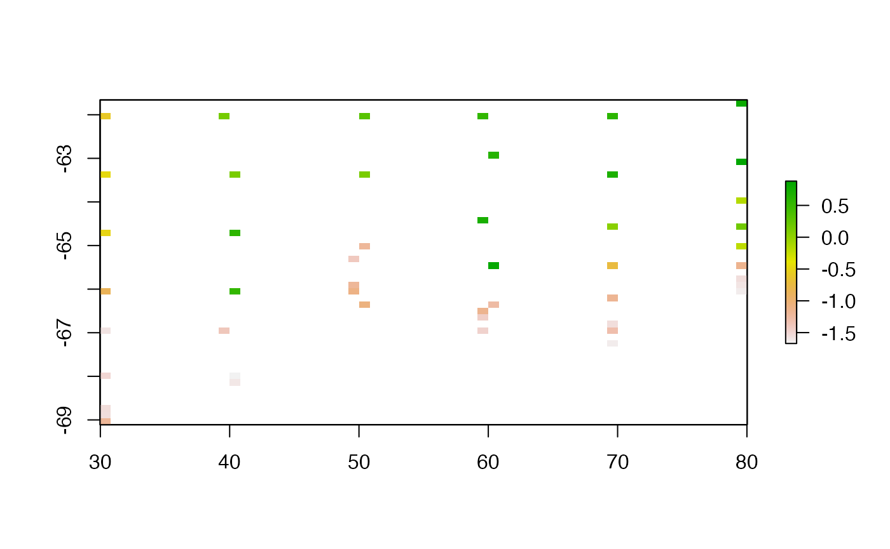

Setup
Define utility functions for repeated usage, and load required packages.
scl <- function(x) (x - min(x, na.rm = TRUE))/diff(range(x, na.rm = TRUE))
library(guerrilla)
library(raster)
#> Loading required package: sp
library(gstat)
library(fields)
#> Loading required package: spam
#> Loading required package: dotCall64
#> Loading required package: grid
#> Spam version 2.7-0 (2021-06-25) is loaded.
#> Type 'help( Spam)' or 'demo( spam)' for a short introduction
#> and overview of this package.
#> Help for individual functions is also obtained by adding the
#> suffix '.spam' to the function name, e.g. 'help( chol.spam)'.
#>
#> Attaching package: 'spam'
#> The following objects are masked from 'package:base':
#>
#> backsolve, forwardsolve
#> Loading required package: viridis
#> Loading required package: viridisLite
#> See https://github.com/NCAR/Fields for
#> an extensive vignette, other supplements and source code
library(akima)
library(palr)Read the zooplankton data.
library(readxl)
bw <- read_excel(system.file("extdata", "BW-Zooplankton_env.xls", package= "guerrilla", mustWork = TRUE))
summary(bw[,1:10])
#> Station Lat Lon depth
#> Min. : 4.00 Min. :-69.11 Min. :29.98 Min. : 175
#> 1st Qu.: 37.25 1st Qu.:-66.84 1st Qu.:40.00 1st Qu.:1523
#> Median : 60.00 Median :-65.84 Median :55.06 Median :3065
#> Mean : 64.36 Mean :-65.46 Mean :54.60 Mean :2791
#> 3rd Qu.:100.25 3rd Qu.:-64.09 3rd Qu.:70.00 3rd Qu.:4114
#> Max. :122.00 Max. :-61.66 Max. :80.02 Max. :5075
#> temp sal chl a mg/m2) ASC (km)
#> Min. :-1.6712 Min. :33.93 Min. : 29.60 Min. :-39.600
#> 1st Qu.:-1.4726 1st Qu.:34.14 1st Qu.: 44.91 1st Qu.: 4.125
#> Median :-1.1332 Median :34.25 Median : 53.00 Median :114.950
#> Mean :-0.6755 Mean :34.22 Mean : 76.80 Mean :187.506
#> 3rd Qu.: 0.1435 3rd Qu.:34.31 3rd Qu.: 85.57 3rd Qu.:330.550
#> Max. : 0.8815 Max. :34.42 Max. :352.51 Max. :775.500
#> ice free days Total abundance
#> Min. :-35.322 Min. : 459.3
#> 1st Qu.: 6.108 1st Qu.: 4425.9
#> Median : 33.153 Median : 11346.1
#> Mean : 33.139 Mean : 23609.3
#> 3rd Qu.: 62.901 3rd Qu.: 27417.3
#> Max. :101.420 Max. :116715.8
lonlat <- as.matrix(bw[, c("Lon", "Lat")])
val <- bw$temp
minmax <- c(-1.8, 40)
rval <- pretty(val, n = 15)
cols <- sst_pal(length(rval) - 1)Plot the temperature data.
plot(val)Create a grid to interpolate onto, this can be used repeatedly for many methods.
library(raster)
r0 <- defaultgrid(lonlat)Simplistic rasterization
The most simple thing possible is to define a grid and populate that with values from points.
We extend the grid by a small amount, which is generally good practice.
rasgrid <- function(xy, value, grid = NULL, ...) {
if (is.null(grid)) grid <- defaultgrid(xy)
rasterize(xy, grid, field = value, ...)
}
lastgrid <- rasgrid(lonlat, val, r0)
plot(lastgrid, asp = "")
The main influence on the result here is purely pixel size, and we must consider the behaviour used when there is more than one value per pixel.
Thin plate spline interpolation.
This is the powerhouse behind GDAL’s raster warping, and that suggests that we could leverage GDAL by creating a data set in the right format for it to warp to.
library(fields)
tpsfun <- function(xy, value, grid = NULL, ...) {
if (is.null(grid)) grid <- defaultgrid(xy)
model <- Tps(xy, value, lon.lat = isLonLat(grid), method = "REML")
interpolate(grid, model, ...)
}
tpsgrid <- tpsfun(lonlat, val)
tpsgrid <- clamp(tpsgrid, minmax[1], minmax[2])
## this shows the error
tpsSEgrid <- tpsfun(lonlat, val, r0, fun = predictSE)
plot(tpsgrid, asp = "")Delaunay and Diriclet
What about Delaunay and Dirichlet without interpolation?
graphics.off()
## input must be ppp
library(spatstat.geom)
#> Loading required package: spatstat.data
#> spatstat.geom 2.2-0
#>
#> Attaching package: 'spatstat.geom'
#> The following object is masked from 'package:palr':
#>
#> col2hex
#> The following objects are masked from 'package:raster':
#>
#> area, rotate, shift
library(maptools)
#> Checking rgeos availability: FALSE
#> Note: when rgeos is not available, polygon geometry computations in maptools depend on gpclib,
#> which has a restricted licence. It is disabled by default;
#> to enable gpclib, type gpclibPermit()
rasterToOwin <- function(x) {
owin(c(xmin(x), xmax(x)), c(ymin(x), ymax(x)))
}
colfun <- viridis::viridis
rbase <- r0
d <- bw
xname <- "Lon"
yname <- "Lat"
varname <- "temp"
pObj <- ppp(d[[xname]], d[[yname]], window = rasterToOwin(rbase), marks = d[[varname]])
lltes<-delaunay(pObj)
meanval <- numeric(length(lltes[[3]]))
for (i in seq_along(meanval)) {
meanval[i] <- mean(marks(pObj[lltes[[3]][[i]]]))
}
plot(as(lltes, "SpatialPolygons"), col = colfun(20)[scl(meanval)*19 + 1], asp = "")
points(d[,c(xname, yname)])
lltes<-dirichlet(pObj)
meanval <- numeric(length(lltes[[3]]))
for (i in seq_along(meanval)) {
meanval[i] <- mean(marks(pObj[lltes[[3]][[i]]]))
}
plot(as(lltes, "SpatialPolygons"), col = colfun(20)[scl(meanval)*19 + 1], asp = NA)
points(d[,c(xname, yname)])Grid interpolation from Dirichlet or Delaunay. This is much slower than the triangulate and cart2bary method above (Mike needs to illustrate this)
fcs.dir <- facets(pObj, nx = ncol(rbase) , ny = nrow(rbase), method = "dirichlet")
#>
#> number of triangles = 50
#>
#> 1, 2, 3, 4, 5, 6, 7, 8, 9, 10, 11, 12, 13, 14, 15, 16, 17, 18, 19, 20, 21, 22, 23, 24, 25, 26, 27, 28, 29, 30, 31, 32, 33, 34, 35, 36, 37, 38, 39, 40,
#> 41, 42, 43, 44, 45, 46, 47, 48, 49, 50.
plot(rasterFromXYZ(as.data.frame(fcs.dir)), asp = NA)
fcs.del <- facets(pObj, nx = ncol(rbase) , ny = nrow(rbase), method = "delaunay")
#>
#> number of triangles = 91
#>
#> 1, 2, 3, 4, 5, 6, 7, 8, 9, 10, 11, 12, 13, 14, 15, 16, 17, 18, 19, 20, 21, 22, 23, 24, 25, 26, 27, 28, 29, 30, 31, 32, 33, 34, 35, 36, 37, 38, 39, 40,
#> 41, 42, 43, 44, 45, 46, 47, 48, 49, 50, 51, 52, 53, 54, 55, 56, 57, 58, 59, 60, 61, 62, 63, 64, 65, 66, 67, 68, 69, 70, 71, 72, 73, 74, 75, 76, 77, 78, 79, 80,
#> 81, 82, 83, 84, 85, 86, 87, 88, 89, 90, 91.
plot(rasterFromXYZ(as.data.frame(fcs.del)), asp = NA)IDW
library(gstat)
idwfun <- function(xy, value, grid = NULL, ...) {
if (is.null(grid)) grid <- defaultgrid(xy)
d <- data.frame(lon = xy[,1], lat = xy[,2], value = value)
coordinates(d) <- ~lon+lat
proj4string(d) <- proj4string(grid)
## inverse distance weighted (IDW)
mg <- gstat(id = "value", formula = value~1, locations = c("lon", "lat"), data = d, ...)
interpolate(grid, mg)
}
dw <- idwfun(lonlat, val, r0)
#> [inverse distance weighted interpolation]
dw <- idwfun(lonlat, val, r0, set = list(idp = 1.5))
#> [inverse distance weighted interpolation]
plot(dw, asp = NA);contour(trigrid, add = TRUE)
Kriging
krifun <- function(xy, value, grid = NULL, ...) {
if (is.null(grid)) grid <- defaultgrid(xy)
d <- data.frame(lon = xy[,1], lat = xy[,2], value = value)
coordinates(d) <- ~lon+lat
proj4string(d) <- proj4string(grid)
v <- variogram(value~1, d)
m <- fit.variogram(v, vgm(1, "Sph", 150, 1))
gOK <- gstat(NULL, "value", value~1, d, model=m)
interpolate(grid, gOK)
}
krigrid <- krifun(lonlat, val, grid = r0)
#> [using ordinary kriging]
plot(krigrid, asp = "")GAM
This needs work, mgcv has more promise than this shows ;)
library(mgcv)
#> Loading required package: nlme
#>
#> Attaching package: 'nlme'
#> The following object is masked from 'package:raster':
#>
#> getData
#> This is mgcv 1.8-35. For overview type 'help("mgcv-package")'.
library(dplyr)
#>
#> Attaching package: 'dplyr'
#> The following object is masked from 'package:nlme':
#>
#> collapse
#> The following objects are masked from 'package:raster':
#>
#> intersect, select, union
#> The following objects are masked from 'package:stats':
#>
#> filter, lag
#> The following objects are masked from 'package:base':
#>
#> intersect, setdiff, setequal, union
gamfit <- gam(temp ~ s(Lon)+ s(Lat), data = bw,family = gaussian, method = "REML")
library(raster)
g <- raster(extent(as.matrix(bw[c("Lon", "Lat")])), nrows = 50, ncols = 50)
pred <- predict(gamfit, as.data.frame(g, xy = TRUE) %>% dplyr::rename(Lon = x, Lat = y) %>% dplyr::select(Lon, Lat))
plot(setValues(g, c(pred)), asp = "")fields
# out <- as.image(d[,varname], x = d[,c(xname, yname)], nx = 25, ny = 25)
# plot(raster(out))
# look<- image.smooth( out, theta= 2.5)
# plot(raster(look))
fsmfun <- function(xy, value, grid = NULL) {
if (is.null(grid)) grid <- defaultgrid(xy)
nrow(grid) <- ncol(grid) ## apparently required
out <- as.image(value, x = xy, nx = nrow(grid), ny = ncol(grid))
raster(image.smooth( out, theta= 2.5) )
}
fsmgrid <- fsmfun(lonlat, val, r0)
plot(fsmgrid, asp = "")Akima
library(akima)
akifun <- function(xy, value, grid = NULL, ...) {
if (is.null(grid)) grid <- defaultgrid(xy)
x0 <- xFromCol(grid)
y0 <- yFromRow(grid)
aklin <- interp(xy[,1], xy[,2], value,
x0, y0, ...)
raster(list(x = aklin$x, y = rev(aklin$y), z = aklin$z[,ncol(aklin$z):1]))
}
akigrid <- akifun(lonlat, val, grid = r0)
plot(akigrid, asp = "")
Along-track distance
Previously we used Latitude as our x-axis, this is not very sensible since the track visits the same latitudes at different longitudes. As a simple improvement let’s build an along-track axis.
# lonname <- "Longitude [degrees_east]"
# latname <- "Latitude [degrees_north]"
# tname <- "yyyy-mm-ddThh:mm:ss.sss"
# d2 <- szt[asub, c(xname, yname, lonname, latname, varname, tname)]
# d2$date <- as.POSIXct(d2[[tname]])
# d2 <- d2[order(d2$date, d2$Depth), ]
# library(geosphere)
# dists <- numeric(nrow(d2)-1)
# for (i in seq_along(dists)) {
# dists[i] <- spDistsN1(as.matrix(d2[i, c(lonname, latname)]), as.matrix(d2[i+1, c(lonname, latname), drop = FALSE]), longlat = TRUE)
# }
# d2$dist <- cumsum(c(0, dists))So now.
# xname <- "dist"
# d <- d2
# ex <- extent(range(d[, xname]), range(d[, yname])) * 1.2
# rbase <- raster(ex, ncols = 25, nrows = 25)
# rlast <- rasterize(d[,c(xname, yname)], rbase, field = d[,varname])
#
# rmean <- rasterize(d[,c(xname, yname)], rbase, field = d[,varname], fun = mean)
#
# rval <- pretty(d[,varname], n = 15)
#
# plot(rlast, col = colfun(length(rval) - 1), breaks = rval, asp = 1)
# points(d[, c(xname, yname)], cex = 0.2)
# plot(rmean, col = colfun(length(rval) - 1), breaks = rval, asp = 1)
# points(d[, c(xname, yname)], cex = 0.2)
#
#
# p <- Tps(d[, c(xname, yname)], d[,varname])
# rp <- interpolate(rbase, p)
# rpse <- interpolate(rbase, p, fun = predictSE)
# plot(rp, col = colfun(length(rval) - 1), breaks = rval, asp = 1)
# points(d[, c(xname, yname)], cex = 0.2)
# plot(rpse, col = colfun(length(rval) - 1), breaks = rval, asp = 1)
# points(d[, c(xname, yname)], cex = 0.2)
#
#
# ## input must be ppp
# library(spatstat)
# library(maptools)
# rasterToOwin <- function(x) {
# owin(c(xmin(x), xmax(x)), c(ymin(x), ymax(x)))
# }
# pObj <- ppp(d[,xname], d[,yname], window = rasterToOwin(rbase), marks = d[, varname])
#
# lltes<-delaunay(pObj)
# meanval <- numeric(length(lltes[[3]]))
# for (i in seq_along(meanval)) {
# meanval[i] <- mean(marks(pObj[lltes[[3]][[i]]]))
# }
# plot(as(lltes, "SpatialPolygons"), col = colfun(20)[scl(meanval)*19 + 1])
# points(d[,c(xname, yname)])
#
#
# lltes<-dirichlet(pObj)
# meanval <- numeric(length(lltes[[3]]))
# for (i in seq_along(meanval)) {
# meanval[i] <- mean(marks(pObj[lltes[[3]][[i]]]))
# }
# plot(as(lltes, "SpatialPolygons"), col = colfun(20)[scl(meanval)*19 + 1])
# points(d[,c(xname, yname)])
#
#
# source("maybetin.R")
#
# fcs.dir <- facets(pObj, nx = ncol(rbase) , ny = nrow(rbase), method = "dirichlet")
# plot(rasterFromXYZ(as.data.frame(fcs.dir)))
# fcs.del <- facets(pObj, nx = ncol(rbase) , ny = nrow(rbase), method = "delaunay")
# plot(rasterFromXYZ(as.data.frame(fcs.del)))
#
# library(gstat)
#
# dsp <- d
# coordinates(dsp) <- c(xname, yname)
# ## inverse distance weighted (IDW)
# mg <- gstat(id = "Al", formula = Al~1, locations = c(xname, yname), data=dsp,
# nmax=7, set=list(idp = .5))
# z <- interpolate(rbase, mg)
# plot(z)
#
# ## with log
# v <- variogram(log(Al)~1, dsp)
# m <- fit.variogram(v, vgm(1, "Sph", 300, 1))
# gOK <- gstat(NULL, "logAl", log(Al)~1, dsp, model=m)
# OK <- interpolate(rbase, gOK)
# plot(OK)
#
# ## without log
# v <- variogram(Al~1, dsp)
# m <- fit.variogram(v, vgm(1, "Sph", 300, 1))
# gOK <- gstat(NULL, "Al", Al~1, dsp, model=m)
# OK <- interpolate(rbase, gOK)
# plot(OK)
#
#
# ## Gaussian
# v <- variogram(Al~1, dsp)
# m <- fit.variogram(v, vgm(1, "Gau", 300, 1))
# gOK <- gstat(NULL, "Al", Al~1, dsp, model=m)
# OK <- interpolate(rbase, gOK)
# plot(OK)
#
# out <- as.image(d[,varname], x = d[,c(xname, yname)], nx = 25, ny = 25)
# plot(raster(out))
# look<- image.smooth( out, theta= 2.5)
# plot(raster(look))
#
#
# library(akima)
#
# x0 <- xFromCol(rbase)
# y0 <- yFromRow(rbase)
#
# aklin <- interp(d[,xname], d[,yname], d[,varname],
# x0, y0)
# # aksplin <-interp(d[,xname], d[,yname], d[,varname],
# # x0, y0, linear = FALSE, extrap = TRUE)
# rlin <- raster(list(x = aklin$x, y = rev(aklin$y), z = t(aklin$z[,ncol(aklin$z):1])))
# ##rsplin <- raster(aksplin)
# plot(rlin, col = colfun(length(rval) - 1), breaks = rval, asp = 1)
#points(d[, c(xname, yname)], cex = 0.2)